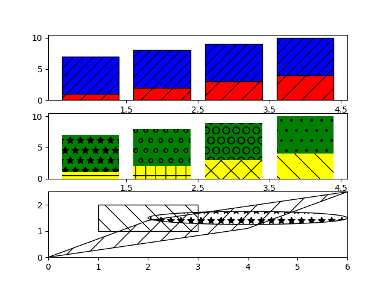

Version 2.2.0
Hatching (pattern filled polygons) is supported currently in the PS, PDF, SVG and Agg backends only.
import matplotlib.pyplot as plt
from matplotlib.patches import Ellipse, Polygon
fig, (ax1, ax2, ax3) = plt.subplots(3)
ax1.bar(range(1, 5), range(1, 5), color='red', edgecolor='black', hatch="/")
ax1.bar(range(1, 5), [6] * 4, bottom=range(1, 5),
color='blue', edgecolor='black', hatch='//')
ax1.set_xticks([1.5, 2.5, 3.5, 4.5])
bars = ax2.bar(range(1, 5), range(1, 5), color='yellow', ecolor='black') + \
ax2.bar(range(1, 5), [6] * 4, bottom=range(1, 5),
color='green', ecolor='black')
ax2.set_xticks([1.5, 2.5, 3.5, 4.5])
patterns = ('-', '+', 'x', '\\', '*', 'o', 'O', '.')
for bar, pattern in zip(bars, patterns):
bar.set_hatch(pattern)
ax3.fill([1, 3, 3, 1], [1, 1, 2, 2], fill=False, hatch='\\')
ax3.add_patch(Ellipse((4, 1.5), 4, 0.5, fill=False, hatch='*'))
ax3.add_patch(Polygon([[0, 0], [4, 1.1], [6, 2.5], [2, 1.4]], closed=True,
fill=False, hatch='/'))
ax3.set_xlim((0, 6))
ax3.set_ylim((0, 2.5))
plt.show()